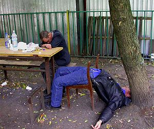
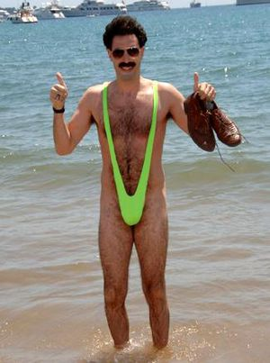

Gandía
 De: La Frikipedia, la enciclopedia extremadamente seria.
De: La Frikipedia, la enciclopedia extremadamente seria.
Gandía es una ¿¿ciudad??? de parias situada al sur de la provincia de Mandriles, al que acuden 2 veces al año: Semana Santa o Época del Monzón y Junio o Época de Sequía. Se fundó a partir de las aguas fecales de un campo de refugiados con sindrome de down con disenteria. Su primer escudo fue una botella de vino metida en un culo, mostrando la afición a la bebida y la penetración anal.
 Mandriles descubriendo la gravedad en proyecto hombre de Gandía.
Tribus urbanas
Esta pintoresca ciudad levantina está habitada por Curas, Gandieros, Gitanos, Casposos, Haraganes (también llamados universitarios) y Falsos Gandieros.
- Los Curas: Lacra social de anormales adoradores de un falso dios y folla ancianas que pierden tiempo y dinero los domingos en antros llamados Iglesias, Bingos y Prostibulos baratos(también conocidos como hoteles). Si te encuentras con uno de cara, mátale y le robas la cartera. Después bajate los pantalones y defeca en su traquea por si le da por rezar moribundo.
- Los Gandieros: (60% de la población). Fuera de la comarca se les conoce como canis o imbéciles. Éstos desarrollan una actividad anormal a lo largo de la semana (estas actividades consisten en: pelarse las clases del insti para irse al parque a chusclarse sus canutos, fumar canutos, regresar a casa fumaos, volverse más subnormales que el dia anterior y tener broncas familiares por sus constantes abusos sexuales de sus padres o perros). Su único objetivo en la vida es morir sin que el resto de la humanidad se entere, sobretodo, en accidentes estúpidos de moto durante sus vacaciones. Pueden verse por toda la ciudad, y no es difícil reconocerlos.
Sus servicios son como el de las prostitutas pero con la diferencia de que es gratis.

Respuesta de un Gandiero cuando un Mandril le pide la hora.
- Los Gitanos (30% de la población, menos cuando llega la Feria, que el porcentaje asciende a 99'9% o cuando sacan el cheque bebé que suben un 150%). Antiguamente estaban concentrados en sus barrios, aunque poco a poco han ido conquistando los barrios más cool. Cabe destacar que son muy admirados por gran parte de los Gandieros y copian mucho de ellos(hasta la miseria y la inmundicia acumulada dentro de casa), hasta el punto que es difícil distinguirlos. Van cubiertos de mierda y oro.
- Los Casposos (to los demás)son Gandieros en avanzado estado de descomposición. La actividad de estos consisten en: escaquearse del trabajo(el que lo tenga) para ir al bar, beber hasta ponerse literalmente colorao, fumar hasta ponerse literalmente morao, mirar
como obscenos a las haraganas, las mandrilas o las gandieras indistintamente, regresar a casa sin saber cómo y tener broncas familiares.

Casposa indicándote cómo ir a la plaza de los palomos y empujarte uno por el recto.
- Los Haraganes son un colectivo heterogeneo de distintos tipos de Aquí, su religión es el Buenrollismo. Las actividades de estos consisten en: Levantarse tarde, fumar(lo que sea), comer mal, fumar, jugar a la Play Station, fumar, ir a Cafetería o Al Piscis, fumar, regresar a sus cuevas y durante la noche repasar todas las clases a las que no han ido durante el día y todas las clases a las que no irán el día siguiente mientras fuman. Durante toda la semana viven casi como eremitas, y no salen nunca a excepción de los Jueves, día en el que religiosamente se emborrachan hasta olvidar lo aprendido a lo largo de la semana, a la mañana siguiente despiertan en camas de desconocid@s. Odian a los Gandieros por considerarlos criaturas inferiores (en relidad porque les tienen miedo), a los Mandriles por que en Junio llegan en manada armando gran escandalo y no dejandoles estudiar (menuda escusa!! haraganes!!), a los Gitanos porque les cholan cuando bajan al super, y a los Casposos, porque les quitan los mejores sitios de las terrazas.
 Hombre practicando el Buenrollismo
- Falsos Gandieros : Son todos aquellos que se han ido instalando en Gandía, venidos de otras partes de Castilla-la Mancha y Andalucía y el mundo (hemirferio sur) o europa del ESTEEEEEEEEEEEEEE (os a quedado claro). Su principal objetivo es convertirse en Gandieros (o mierdas que es lo mismo), pero pocos lo consiguen. Se calcula que triplican en número a los autóctonos.
Barrios y pedanías
- Beniopa: Barrio periférico donde existe una disputa territorial milenaria entre los Gandieros, los Gitanos y los ninjas. En los últimos años los últimos han ganado mucho territorio.
- Benipeixcar: Aunque los oriundos de este barrio siguen creyéndose independientes, són Gandieros de pura cepa. Tienen ideas peligrosas en su cabeza y habra que masacrarlos. Se cree que poseen genes en común con los judios.
- Playa de Gandía: ciudad fantasma en invierno y capital de España durante los meses de julio y agosto.
- Corea: Por el día parece tranquilo, pero por la noche mas vale ir acompañado porque no hay nada absolutamente nada en ese sitio y te podrias aburrir.
- Nazaret o Santa Ana: mas conocido como el mercado de la droga. Feudo gitano por excelencia. Mas vale la pena no ir allí, ya que hasta la policía se lo piensa. Si entras, no sales, a no ser que seas gitano o gandiero "mu chungo" o lleves un lanzallamas.
- Roís de Corella: Parece de lo más normal, hasta que te enteras que allí está comisaria, pero tranquilo..
mientras no lleves droga ellos no te la quitaran para fumarsela o pincharse.Llevan en huelga desde hace decadas y se les reconoce por su incompetencia.
- La Urba: Barrio pijo donde los haya, aunque sus calles pertenecen a los Gandieros, ya que allí es donde más les gusta hincarse los porros. Es curioso que sus habitantes solo salen a la calle acompañados de sus perros pekineses o sus mercedes descapotables.
- Marchuquera situado en los Prepirineos a unos 12.000m a nivel del mar. Se duda que haya vida allí.
- Simancas: Conjunto de bloques demolidos hace poco. Los gitanos allí residentes han sido repatriados al Raval, Nazaret o las alcantarillas.
- Las 500: Barrio conquistado a los gitanos por los falsos gandieros y los parias del este.
- El Raval: Barrio muy pintoresco, de moda en los últimos años, tanto para gandieros como para gitanos y que ahora esta en bancarrota.
- Grao de Gandía: también conocido como el cementerio en invierno y por su poblacion de ancianas de mierda retrasadas. Si paseas por sus calles te entra una diarrea que flipas y ves a los fracasados más borrachos que te puedas imaginar, todavía podrás escuchar a los más viejos hablar esa lengua muerta en Gandía...mmm... hablar?..... Ah sí, lengua de borrachos. En este barrio se inventó la Fideuà, el fracaso y el absentismo laboral.
Historia
Ya en tiempo del Paleolítico se sabe que Gandieros habitaban las montañas cercanas a Marchuquera, donde así, de fumada, pintaron unos palitos y unos chivos muy salaos en la cueva del Parpalló. Más tarde, los íberos, edificaron su castillo de Bayrén, modernizado por los moros, y actualmente inexistente, aunque la gente se empeñe en decir que "las 4 piedras matás" que hay en to lo alto de la montaña sean el castillo.
No se vuelve a tener constancia hasta 1249, cuando Jaime I el Matamoros, le da la torba de venirse a Valencia a joder un poco a los moros que tan pacíficamente aquí vivían. Con los años, Gandía se transforma en una ciudad cosmopolita, donde algunos Gandieros como Roís de Corella, Ausiàs March o Joanot Martorell, así, entre porrito y porrito, escriben las obras más importantes del siglo de oro de la lengua valenciana. Si de algo puede presumir esta ciudad también, es de ser la cuna de la mafia, y es que los Borgia fueron el ejemplo a seguir por la mafia calabresa, los cárteles mexicanos, etc.
Todo cambia con la expulsión de los moriscos, ya que los Gandieros pierden sus proveedores de hachís, con ello, las ganas de trabajar, por lo que la ciudad entra en una gran decadencia.
Transportes
Gandía está muy bien comunicada, ya que hay infinidad de autobuses diarios que salen para todo el centro de cercanías" a AVE a Madrid. Ahora bien, para ir con tren hacia Alicante, olvídate, tienes que ir hasta Valencia y de allí, a Alicante por interior (el paisaje es mucho más bonito).
Sabías que...
- ...ser gandiense es una lacra social?
- ...tras la expulsión de los moriscos Gandía se repobló con gitanos de Oliva y más moriscos?
- ...las putas de las Palmeras, la citroen, el poligono, los institutos y la comisaria son de cartón-piedra o menores de edad?
- ...Gandía puso de moda las zapatillas colgadas en los cableados eléctricos?
- ...la palabra más pronunciada en Gandía es: PRIMO?
- ...somos peores que Cullera, Oliva y Denia? Y quien diga que no, da lache.
- ...algunas especies de ratas evolucionaron de los gandienses?
- ...los subsaharianos son tan negros porque sus padres veraneaban en Gandía?
- ...en Gandía, a parte de San Francisco de Borja(el putero), también se venera a Chimo Bayo y a su puta madre?
- ...por mucho que se empeñe la gente, pertenecemos a Valencia y no a Alicante?
- ...en Gandía no se dice: nano? Se dice: primo.
- ...en Gandía nos hartamos a pagar multas porque nos da lache llevar casco y retrovisor porque somos subnormales y analfabetos?
Autor(es):
- Alex2610
- Pyrokar
- Musico
- Frikisexigirl!!!
- Generibot
- Gandiense
- Kagami-sama
- FacebookUser9691
Frikipedia 2005-2016, Licencia
GFDL 1.2 - Extraído por FrikiLeaks